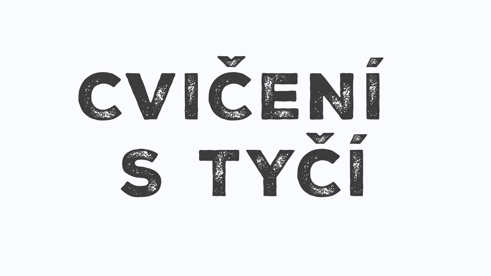
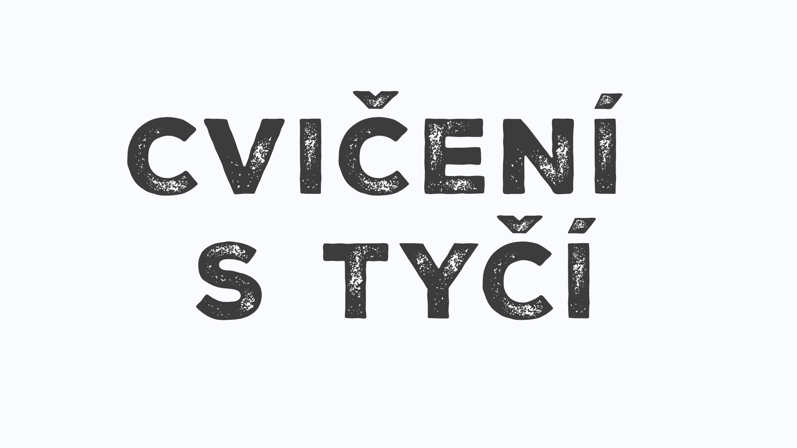

O projektu
Umělecký projekt je součástí bakalářského projektu studenta Honzy Mikulici. Jedná se o projekt zabývající se sportem a transformací.
Autor k práci píše blog, do kterého vkládá své myšlenky a pocity. Jedná se o přímou reflexi jeho sportovní činnosti a zkoumání
celého procesu sportování jako pohybu a transformace těla.
Zajimavé knihy související se sportem a wellbeingem:

O čem mluvím, když mluvím o běhání - Haruki Murakami
Murakami běhá 25 let – každý den deset kilometrů, každý rok maraton. Titul knihy je variací na povídkovou sbírku O čem mluvím, když mluvím o lásce Raymonda Carvera. Kniha „memoárů“ rozhodně zaujme tři typy fanoušků: autorovy skalní příznivce, pro které je kultovní postavou, pak hledače receptu, jak se stát spisovatelem, a nakonec, jak jinak, běžce na dlouhou trať. V knize je jednak soubor esejů o běhu na dlouhé tratě, jednak spisovatelův „diář“ čtyřměsíční přípravy na maraton v New Yorku. Hovoří o fyzické i psychické bolesti, o stárnutí, o tématech, která se mu honí hlavou. Jsou tu úvahy o spisovatelství jako takovém: doba už nepřeje romantickým týpkům, co nasávají nebo berou drogy a píšou skvěle – doba přeje globálním spisovatelům-manažerům. Ostatně přísný režim a skvělá kondice bývají totožné u byznysmenů i u spisovatelů.
(zdroj: www.databazeknih.cz)
Honza si myslí:
„Murakami v několika krátkých kapitolách představuje svou sportovní a osobní cestu, během níž objevuje soužití života spisovatele a sportovce. Popisuje životní problémy, které mu komplikují sportovní činnost, a velmi čtivým způsobem motivuje čtenáře.“

Tao úspěchu - Derek Lin
V mimořádně přitažlivé a čtivé knížce přináší taoistický mistr Derek Lin praktický a systematický výklad duchovní nauky taoismu. Provází čtenáře pěti okruhy života, a ukazuje tedy životní cestu, která je v souladu se základními principy. Úspěšný, dokonalý život získáme jejich naplněním „nyní a zde“, vlastní praxí v každodenním životě. Díky tomu dokážeme plně prožít svůj život, šťastně a úspěšně.
(zdroj: www.databazeknih.cz)
Honza si myslí:
„Tao úspěchu je velmi dobrým začátkem pro studium Tao. V krátkých příbězích autor aplikuje různé kapitoly z jeho učení.“
Tao te ťing - Lao-c´
Základní text taoismu, jenž patří více než dva tisíce let k hlavním zdrojům čínského myšlení. Je nejčastěji překládaným čínským textem do západních jazyků a dnes je považován za jedno z klíčových děl světové filosofie.
(zdroj: www.databazeknih.cz)
Honza si myslí:
„Tato kniha se výrazně liší od již zmíněné knihy Tao úspěchu. Obsahuje původní kapitoly, na které příběhy z Tao úspěchu volně navazují.
Četba je o něco náročnější – jednotlivé kapitoly jsou poměrně složité a doplněné analytickým rozborem od překladatelky Berty Krebsové. Kniha je určitě vhodná pro ty, kteří se chtějí do učení o Tao ponořit hlouběji a posunout se dál.“
Terapie jógou - Kateřina Černá
Najděte vnitřní sílu a vyrovnanost se zkušenou lektorkou terapeutické jógy. Cesta životem není vždy snadná a někdy má člověk pocit, že uvízl na místě a nevidí východisko. Možná je to vlivem okolnosti, možná jsou na vině negativní vzorce chování, které si neseme z dětství. Lektorka Kateřina Černá má dlouholeté zkušenosti s výukou terapeutické kundaliní jógy a ukáže vám, jak s pomocí jógových sestav využít krizi jako příležitost. Staňte se mistrem svého života a najděte v něm novou radost a nový začátek!
(zdroj: www.databazeknih.cz)
Honza si myslí:
„Kniha obsahuje jak jógové sestavy, tak i meditační cvičení, která jsou určena k praktickému využití v různých životních situacích. Jógové sestavy jsou méně náročné, takže nejsou vhodné pro ty, kdo hledají power jógu. Spíše je tato kniha určena lidem, kteří se chtějí zastavit, uvolnit napětí a stres, poznat sami sebe a své tělo – a zároveň pracovat na své mentální kondici..“
Ásana jako symbol - Barbora Hu
Symbolické významy dvaceti základních ásan. Barbora Hu je zkušená lektorka jógy, vystudovaná indoložka a kulturoložka, autorka několika knih o józe a publicistka. V této knížce přináší ojedinělé propojení psychologie symbolu s filosofií a praxí jógy. Kniha je užitečným průvodcem pro všechny, kteří mají rádi pohled pod povrch běžně viděného. Ilustracemi ji doprovodil výtvarník Milan Sodoma.
(zdroj: www.databazeknih.cz)
Honza si myslí:
„U této knihy jsem zatím teprve u druhé pozice, ale už teď jsem si ji velmi zamiloval. Každá kapitola se věnuje jedné ásaně – dozvídáte se o její filozofii, postupu provedení, dostáváte různé tipy i otázky k zamyšlení a praktikování.
Zrovna jsem si po přečtení vyzkoušel pozici Stromu a nikdy předtím jsem v ní nebyl v tak klidném a soustředěném mentálním rozpoložení. Určitě doporučuji všem, kdo se chtějí více ponořit do jednotlivých asán.“
Sport je umění - Petr Volf
Žádná taková kniha pojednávající o sportu v umění ještě nevyšla. Je určena milovníkům sportu i milovníkům umění. Je to radostná publikace, jejímž motem je pohyb a jeho krása. Její autor, novinář a spisovatel Petr Volf se daným tématem zabývá dlouhodobě. Ukazuje překvapivou skutečnost: sportovní tématice se ve dvacátém a jednadvacátém století věnovala více než stovka významných výtvarných českých umělců, od Jana Preislera a Emila Filly, přes Kamila Lhotáka, Bohumíra Matala, Jiřího Koláře až po Michaela Rittsteina, Jaroslava Rónu, Františka Skálu či Krištofa Kinteru.
Seznamuje nás také se sportujícími umělci, pro něž je sport stejně důležitý jako samotná tvorba: Karel Malich je fotbalista, Zdeněk Sýkora hokejista, Theodor Pištěk automobilový závodník, Federico Díaz skokan o tyči. V sochách jsou zvěčněni legendární osobnosti jako běžec Emil Zátopek, hokejista Ivan Hlinka, fotbalista Josef Masopust nebo tenistka Suzanne Lenglenová.
Kniha má třináct kapitol, které jsou rozděleny podle sportů: fotbal a hokej, atletika a cyklistika… až po sportoviště a sportovní nářadí.
Text (v češtině a angličtině) přibližuje jednotlivá díla čtivou formou a v širších dobových i kulturních souvislostech. Vznikla výjimečná kniha, která přináší poznání a nabízí veskrze pozitivní zážitek.
(zdroj: www.databazeknih.cz)
Honza si myslí:
„Kniha Petra Volfa, který stojí za magazínem Sport in Art, se věnuje sportovní tematice v umění a zobrazení sportu v různých uměleckých formách – malbě, soše či instalaci. Umělecká díla jsou rozčleněna podle sportovních disciplín, jako jsou fotbal, hokej, atletika, box nebo cyklistika, takže si můžete snadno listovat tím, co vás nejvíce zajímá.“

Etika a sport - Anna Hogenová
Etika sportu. Dobro a zlo - nejstarší pojmy etiky. Pohyb jako fenomén. Fenomenologické pojetí tělesnosti a prožitku. Kinantropologie. Filozofický problém existence. Lidská tvořivost. Sport a příroda. Filozofie a pedagogika. Kalokagathia - základ sportování. Filozofie, etika a doping. Fenomén lži. Fenomén věrnosti. Postmoderní tuláctví.
(zdroj: www.databazeknih.cz)
Honza si myslí:
„Anna Hogenová je vystudovaná sportovkyně a filozofka, což se v jejím textu výrazně projevuje. Četba je vhodná pro čtenáře, kterým nedělá problém filozofická literatura, neboť se autorka v knize často odkazuje na různé filozofy. Rozebírá však i zajímavá témata, jako jsou doping, kalokagathie či pedagogika sportovní výchovy.“
Sport in art - Magazín
Online & tištěný magazín: Články o výtvarné scéně inspirované pohybem a sportem, včetně společenských témat, rozhovorů, reportáží a tipů na výstavy. Online magazín vychází dvakrát týdně, zatímco tištěný každé tři měsíce. Tištěný magazín získal mezinárodní ocenění Red Dot Award a Zlatý středník.
(zdroj: www.sportin.art)
Honza si myslí:
„Magazín Sport in Art, za kterým stojí Petr Volf (o němž jsem se již zmiňoval v souvislosti s knihou Sport je umění), tu musím také uvést. Sice jsem zatím četl pouze jedno číslo – věnované hokeji –, ale musím uznat, že mě nadchlo. Magazín totiž přibližuje široké veřejnosti téma sportu v umění, o jehož existenci mnozí ani netuší.
Pravidelně obsahuje rozhovory s umělci, kteří sportují a zároveň tvoří, a doplňuje je zajímavými tipy na výstavy. Jsem opravdu rád, že v Česku existuje takový magazín, a těším se, až si přečtu další vydání.“
Zajimavé filmy a seriály související se sportem a wellbeingem:

Don't Die: The Man Who Wants to Live Forever
Neumírání: O muži, který chce žít věčně
Dokument o bohatém podnikateli Bryanu Johnsonovi, který neváhá investovat do experimentů s vlastním tělem. Chce totiž přelstít stárnutí a žít déle než kdokoli před ním.
(zdroj: Netflix)
Honza si myslí:
„Dokument zachycuje život Bryana Johnsona, který bojuje se stárnutím a snaží se snížit svůj biologický věk. Představuje jeho každodenní rutinu a přísná pravidla, jimiž se řídí. Pro ‚běžného člověka‘ je tento způsob života téměř nemožný, ale při sledování si v určitých momentech říkáte, že by přece jen šlo něco aplikovat.“

Headspace Guide to Meditation
Velký průvodce meditací
Headspace představuje příjemně animovaný pohled na výhody meditace a nabízí techniky a instrukce, abyste se do toho mohli pustit i vy.
(zdroj: Netflix)
Honza si myslí:
„Seriál vás příjemnou animovanou formou uvede do světa meditace a seznámí s osobními prožitky vypravěče. Pro začátečníky je naprosto vhodný.“

Headspace Guide to Sleep
Velký průvodce spánkem
Naučte se lépe spát. V každém dílu se probírají různé rozšířené omyly, zazní pár dobrých rad a na závěr proběhne zklidňující meditace.
(zdroj: Netflix)
Honza si myslí:
„Tento seriál vás tentokrát provede meditací vhodnou pro spánek. Dozvíte se zajímavé informace a naučíte se techniky pro lepší snový život.“

Headspace: Unwind Your Mind
Velký průvodce uvolněním mysli
Chcete se uvolnit, meditovat nebo se pořádně vyspat? Tenhle interaktivní speciál vám nabízí pomoc ušitou na míru vašemu způsobu myšlení nebo aktuální náladě.
(zdroj: Netflix)
Honza si myslí:
„Interaktivní forma meditace, při které si sami zvolíte, co chcete v daný moment praktikovat, a jste strůjcem svého zážitku.
Bohužel v současné době není dostupná na Netflixu. :(“
Zajimavé webové stránky související se sportem a wellbeingem:

FitFab Strong
V Česku chyběl kvalitní fitness program s důrazem na techniku, který by ale byl zároveň zábavný.
FITFAB Strong je online fitness program natočený na živou hudbu, který je dostupný zdarma na YouTube. Cílem je zvednout Čechy a Slováky z gaučů a ukázat jim, že si mohou zamilovat pohyb bez ohledu na věk nebo váhu.
„Splnila jsem si sen a vy se právě stáváte jeho součástí. Buďte FIT, buďte FABulous, buďte Strong. Staňte se FITFAB Strong.“
Andy Voříšková (Pavelcová), autorka projektu
(zdroj: fitfabstrong.cz)
Honza si myslí:
„Cvičit s FitFab Strong jsem začal, když byly k dispozici pouze tři série – Strong, Stronger a Light. V současné době je na výběr velké množství sérií zaměřených na různé typy cviků, od jednoduchých lekcí, které se soustředí na těhotenské cvičení, jógu, flexibilitu a mobilitu, až po náročnější tréninky, při nichž si dáte zabrat svalům, zlepšíte výdrž kardiem nebo si užijete odlehčená cvičení zaměřená na tanec. Tento program a tým jsem si za ty roky velmi oblíbil, a když si chci pořádně máknout, Strong – Stronger – Strongest jsou pro mě nejlepší volby.“
Playlisty na cvičení:


 

(Žádné informace nesmí být považovány za lékařské nebo jiné zdravotní poradenství. Aplikování vybraných cvičení je na vlastní nebezpečí a autor se zprošťuje jakékoliv odpovědnosti za případné zranění nebo škody. V případě zdravotních komplikací konzultujte s vaším lékařem.)
(naposledy aktualizování: 5.5.2025)